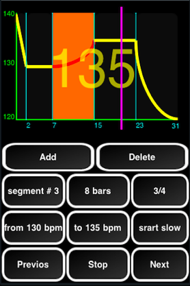
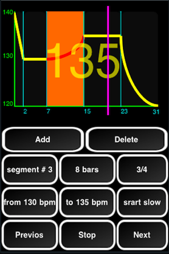

Click Track
is a sophisticated metronome, that allows you to build a tempo track, using up to 10 segments of tempo changes data.
It will help you practice tempo changes, time signature changes.
Whether you are a musician or a dancer, this is a very innovative tool for you to use.
User Guide:
Click Track provides you with up to 10 segments in total.
Each segment contain the following changeable data :
start tempo , end tempo , time signature , number of bars
and gradient
There is one and only one selected segment at a time.
The selected segment allow you to edit its data.
Read the following to understand how to set your desired track.
Write us:
If there is anything else you would like to tell us please write to:
 



1
2
3
4
5
6
7
8
9
10
11
12
13
14
15
16
17
18
19
1 The yellow lines represent the segment curve. See button number 17 for more details.
10 The ‘Add’ button adds a new segments next to the selected segment, unless there are 10 open segments. The new segment will contain 8 bars, will have the previous’ segment time signature and ending tempo.
20
2 The large number in the middle represents the current tempo as playback progresses.
3 Segments are separated by a Cyan line. you can press the segment’s area to select it.
4 The Magenta progress bar represents the current playback location.
5 The selected segment is represented by an Orange background and a Red segment line. The selected segment’s data is shown inside the buttons 12-17.
6 The highest tempo of the track
7 The middle tempo of the track.
8 The lowest tempo of the track.
9 Each segment separator shows the bar it ends at.
11 The ‘Delete’ button removes the selected segment, unless there is only one left.
12 Pressing the segment button allows you to select a segment using the numeric keypad. Typing a number larger than the number of segments will select the last segment.
13 Pressing the number of bars will allow you to change the number of bars of the selected segment.
Each segment can hold between 1 and 60 bars. If you desire a longer segment, add another one with the same data.
14 Pressing the time signature will allow you to change the time signature of the selected segment.
you may choose between 2-7/4. if you want to use times signatures such as 3/8, choose 3/4 and double the tempo.
15 Pressing the start tempo will allow you to change the starting tempo of the selected segment.
You may choose between 40 and 350 beats per minute. If you encounter performance issues at high tempos on older generation devices, choose a tempo of %50 and treat it as if it is clicking every two beats.
16 Pressing the end tempo will allow you to change the ending tempo of the selected segment.
17 Pressing the gradient button allows you to choose the acceleration/deceleration curve. You can choose between linear, fast changing first or slow changing first. If the tempo does not change between segment’s beginning and end, this selection does not matter for that segment.
18 Selects the previous segment.
19 Selects the next segment.
20 Go/Stop button starts or stops the metronome. The track will always start playing from the beginning. While playback is playing you may not edit the track, and trying to do so will pop up an alert window.